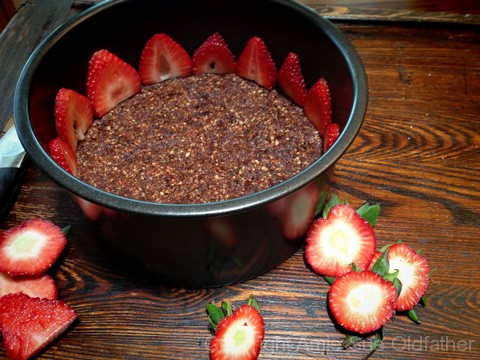

Strawberry Rhubarb Cream Cake
~ raw, vegan, gluten-free ~
Today, I want to share with you a cake that is light, creamy, and has the perfect balance between strawberries and rhubarb (sweet and tart). Not to mention sitting on a foundation of a chocolate nut crust. Talk about a match made in heaven.
If you wish to create the same look as I did with the strawberries along the edge of the cake, you will either a Springform pan or cake pan with a removable bottom. I used a 6″ cake pan with a removable bottom. But have fun with this.
You can use any shape pan, tall or short. Be creative! If rhubarb is not in season where you live or you can’t find fresh, you can use frozen. Be sure to thaw it prior to using it and always try to buy organic. Enjoy!
Crust: yields 3 cups dough
- 1 1/2 cups raw almonds, soaked & dehydrated
- 3/4 cup shredded coconut
- 3 Tbsp raw cacao powder
-
- 1/8 tsp sea salt
- 1 cup organic raisins
- 1/2 cup prunes
- 2 Tbsp water
- 2+ cups organic fresh strawberries, sliced
Filling: yields 4 1/2 cups batter
Preparation:
Crust:
- Process the almonds in the food processor, fitted with the “S” blade, to a fine crumble. If you skip the dehydration process of the almonds and use them moist, the texture will be a bit different.
- Add the coconut, cacao powder, and salt. Pulse together.
- Add the raisins or prunes and process till the dough starts to stick together. If the dried fruit is really dry, rehydrate in hot water for 10 minutes before adding to the recipe. Be sure to drain all the excess water from them before adding.
- Only add the 2 Tbsp of water if the batter is too crumbly and not sticking together.
- Press 2 cups of the crust dough into the bottom of the pan. Press evenly and firmly. The other 1/2 cup is used as a garnish when decorating the cake.
- Cut the green stems off of the strawberries and slice them as seen in the photo below. Line the pan with like-sized strawberries. Set aside to make the filling.
Filling:
- Prepare the coconut oil, have it measured and melted before starting the recipe. If using lecithin granules first grind them to a powder in a coffee or spice grinder. Have this measurement all ready to go as well.
- In the blender, combine the rhubarb ice cream mix, strawberries, Rustic Style Rhubarb Sauce and blend until combined.
- While the blender is running, drizzle in the coconut oil, mixing until well incorporated.
- Add the lecithin and blend for an additional 20-30 seconds.
- Pour the mixture into the pan, be gentle so you don’t disrupt the strawberries along the perimeter.
- Gently tap the pan on the countertop to bring up any air bubbles. Cover and place in the fridge for 4-8 hours or until firm to the touch.
- Needs tips on how to cut the cake? Click here. Keep the cake in the fridge or you can freeze it for up to 1 month.


© AmieSue.com